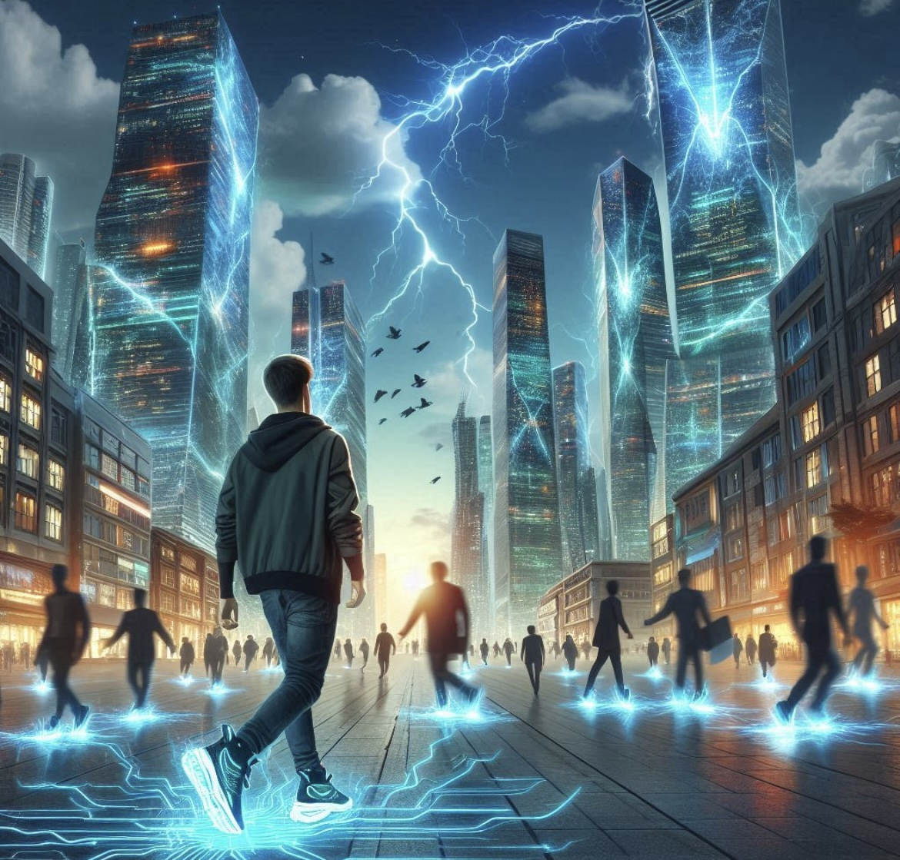

O que é Eletrostática?
A eletrostática é o estudo das cargas elétricas em repouso. Ela é fundamental para compreender fenômenos como eletricidade estática e as interações entre partículas carregadas.
Princípios da Eletrostática
Lei de Coulomb
Descreve a força entre duas cargas elétricas. A força é diretamente proporcional ao produto das cargas e inversamente proporcional ao quadrado da distância entre elas.
Campo Elétrico
Região ao redor de uma carga onde outras cargas sentem uma força. É representado por linhas de campo que indicam a direção da força.
Potencial Elétrico
Trabalho necessário para mover uma carga em um campo elétrico. É medido em volts e indica a energia potencial elétrica por unidade de carga.
Aplicações da Eletrostática
A eletrostática tem diversas aplicações práticas, como em impressoras a jato de tinta, filtros de ar e até mesmo na medicina, como em equipamentos de diagnóstico. Compreender os princípios da eletrostática é essencial para várias inovações tecnológicas.
A eletrostática é utilizada para atrair as gotas de tinta, permitindo a impressão precisa em papel.
Os filtros eletrostáticos removem partículas do ar usando cargas elétricas para atraí-las.
Experimentos Interativos
Descubra como a eletrostática funciona através de experimentos simples que podem ser realizados em casa ou na escola. Por exemplo, o experimento do balão que atrai papel picado demonstra a atração entre cargas opostas.
Encha um balão e esfregue-o contra o cabelo. Veja como ele atrai pedaços de papel picado!
Use um balão carregado para ver como ele pode mover grãos de pó de café leve.
Visualize os Conceitos
As cargas elétricas podem ser positivas ou negativas, e interagem umas com as outras através de forças elétricas.
O campo elétrico é a região ao redor de uma carga onde outras cargas sentirão uma força.
A força elétrica é a interação entre cargas, sendo responsável por fenômenos como eletricidade estática.
Descubra Mais!
A eletrostática é fundamental em diversas áreas da ciência e tecnologia, incluindo eletrônicos, medicina e energia.